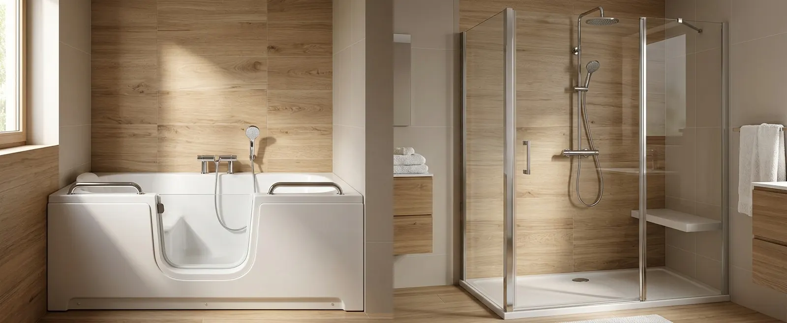

À retenir
- ·Baignoire à porte : pour qui tient au bain assis et à l’immersion.
- ·Douche adaptée : pour qui privilégie l’entrée directe, l’espace et l’évolutivité.
- ·Le transfert (s’asseoir, se relever, être aidé) compte autant que la hauteur d’entrée.
- ·Pensez l’usage d’aujourd’hui et de demain, et celui des autres membres du foyer.
Baignoire à porte ou douche senior : le comparatif
Synthèse indicative — les caractéristiques exactes (seuil, options, dimensions) varient selon les modèles et se vérifient sur la documentation du produit proposé.
La baignoire à porte : garder le plaisir du bain
Le principe : une porte étanche s’ouvre dans le flanc de la baignoire. On entre à vide en franchissant un seuil bas, on s’installe sur l’assise intégrée, on ferme la porte, puis la baignoire se remplit. En fin de bain, on attend la vidange complète avant de rouvrir. Beaucoup de modèles s’installent dans l’emprise d’une baignoire classique et se complètent d’une douchette pour l’usage douche.
Ses forces : c’est la seule solution qui préserve le bain assis et l’immersion — un vrai critère de qualité de vie pour qui y tient. L’assise intégrée dispense de siège rapporté, et certains modèles proposent des options de confort (dossier ergonomique, repose-tête, hydromassage selon les gammes).
À anticiper sereinement : l’attente pendant le remplissage et la vidange, porte fermée — prévoyez une pièce chauffée et un peignoir à portée ; la capacité du chauffe-eau, à vérifier avec l’installateur pour remplir la cuve d’un coup ; le débattement de la porte dans la pièce ; le transfert vers l’assise, qui demande de pivoter et de s’asseoir de façon autonome ou aidée ; enfin le joint de porte, à nettoyer régulièrement pour rester étanche.
La douche adaptée : l’accès direct et l’espace
Ses forces : on entre et on sort sans attendre, par un seuil bas ou de plain-pied ; l’espace se dimensionne à la pièce, ce qui facilite l’aide d’un proche et l’usage par toute la famille ; siège, barres et douchette s’ajoutent ou s’ajustent au fil des besoins — c’est la solution la plus évolutive. Types de douches, équipements et budgets sont détaillés dans nos guides Prix d’une douche senior et Remplacer une baignoire par une douche.
À anticiper : le ressaut réel après pose, le drainage et l’étanchéité (surtout en plain-pied), le sens d’ouverture de la paroi, la position du siège et des commandes — autant de points qui se règlent à la conception, pas après. Le renoncement au bain est définitif : si l’immersion compte pour vous, c’est le critère décisif.
Transferts, aide d’un proche, fauteuil : le vrai juge de paix
La hauteur d’entrée attire l’attention, mais c’est le geste complet qui départage les deux solutions : franchir, pivoter, s’asseoir, se relever. En baignoire à porte, le seuil est bas mais l’espace intérieur est étroit : le pivotement vers l’assise doit rester maîtrisé, et un aidant a peu de place autour de la cuve. En douche, l’entrée peut se faire avec un déambulateur, le transfert vers un siège rabattable est plus direct, et l’aidant accède de face ou de côté.
En fauteuil roulant, une baignoire à porte standard n’est pas conçue pour le transfert depuis le fauteuil — certains modèles spécifiques existent, à vérifier cas par cas. Une douche adaptée offre plus de possibilités, à condition d’être pensée pour : accès de plain-pied, espace de transfert, siège à bonne hauteur, commandes atteignables. Notre guide Douche senior ou douche PMR détaille ces critères.
Eau chaude, entretien, travaux : trois différences concrètes
- ·Eau chaude — un bain remplit la cuve à chaque usage : la capacité et le temps de chauffe de votre chauffe-eau conditionnent le confort réel (volume selon les modèles — à vérifier sur la fiche produit). Une douche consomme selon sa durée : souvent moins, pas systématiquement.
- ·Entretien — la baignoire à porte ajoute un joint et un mécanisme de porte à entretenir ; la douche garde l’entretien classique (receveur, joints, paroi). Dans les deux cas, des surfaces faciles à nettoyer se choisissent au devis.
- ·Travaux — les deux solutions s’installent le plus souvent dans l’emprise de la baignoire actuelle, en quelques jours : dépose, plomberie, pose, habillage et finitions. La baignoire à porte peut demander une vérification électrique selon les options ; la douche, un travail d’étanchéité plus poussé.
Les prix comparés
Estimations nationales 2026Produit (l’essentiel du budget, très variable selon gamme et options), dépose de l’ancienne baignoire, plomberie, pose et habillage. Électricité en plus selon les options ; chauffe-eau éventuel à part.
Remplacement de baignoire type : dépose, receveur, étanchéité, panneaux, paroi, siège et barres. Détail poste par poste dans le guide des prix douche.
Les deux projets relèvent des mêmes aides à l’adaptation du logement — MaPrimeAdapt’ en tête, sous conditions et avant travaux. À budget proche, le choix reste donc bien une question d’usage, pas de financement.
Quelle solution selon votre situation ?
Avant de décider, posez-vous — et posez au professionnel — les bonnes questions : bain ou douche au quotidien ? transfert autonome ou aidé ? capacité du chauffe-eau ? débattement des portes ? entretien réaliste ? budget total, travaux et options compris ? usage dans cinq ans ?
Comparer les solutions adaptées à votre salle de bain
Indiquez votre installation actuelle, vos préférences et votre code postal pour vérifier les solutions disponibles dans votre secteur. Gratuit et sans engagement.
Questions fréquentes
Une baignoire à porte est-elle plus pratique qu’une douche ?
Ni plus ni moins : elle est plus pratique pour prendre un bain assis, moins pour une toilette rapide (attente de remplissage et de vidange). Le bon choix suit votre usage réel, pas une règle générale.
Faut-il attendre dans la baignoire pendant le remplissage ?
Oui : on entre à vide, on ferme la porte, puis la cuve se remplit — et on attend la vidange complète avant de rouvrir. Une pièce bien chauffée et une robinetterie à bon débit rendent cette attente tout à fait confortable.
Peut-on ouvrir la porte avant la vidange ?
Non — la porte s’ouvre vers l’intérieur sur la plupart des modèles et reste bloquée par la pression de l’eau : l’eau doit être évacuée d’abord. Les temps de vidange varient selon les modèles ; c’est une donnée à demander sur la fiche produit.
Faut-il changer de chauffe-eau pour une baignoire à porte ?
Pas systématiquement : cela dépend du volume de la cuve choisie et de la capacité de votre ballon. Faites vérifier ce point au devis — remplir un bain avec un chauffe-eau sous-dimensionné est la déception la plus fréquente.
Une personne en fauteuil peut-elle utiliser une baignoire à porte ?
Pas avec un modèle standard : le transfert depuis le fauteuil vers l’assise intégrée n’est pas prévu par défaut. Des configurations spécifiques existent chez certains fabricants ; une douche conçue pour le transfert reste la piste la plus souple.
Quel est le prix d’une baignoire à porte ?
En repère 2026 : 4 000 à 10 000 € posée, selon la gamme, les options (hydromassage, chauffage de l’assise…) et les travaux annexes. Le produit pèse davantage dans le budget que pour une douche, où la main-d’œuvre domine.
Quelle solution est la plus simple à entretenir ?
La douche, en général : surfaces ouvertes, pas de mécanisme. La baignoire à porte ajoute le joint et la porte à entretenir régulièrement — simple, mais indispensable pour préserver l’étanchéité.
Quelles aides pour ces deux projets ?
Les mêmes : baignoire à porte comme douche adaptée relèvent de l’adaptation du logement. MaPrimeAdapt’ (50 à 70 % des dépenses éligibles, sous conditions), APA, PCH et compléments locaux — accords à obtenir avant travaux. Voir les conditions.
Quelle solution pour un besoin qui peut évoluer ?
La douche offre plus de marges : renforts posés d’avance, siège ajouté plus tard, espace ajustable. La baignoire à porte suppose de conserver la capacité de transfert vers l’assise — en cas de doute, un avis d’ergothérapeute avant de trancher est un bon investissement.